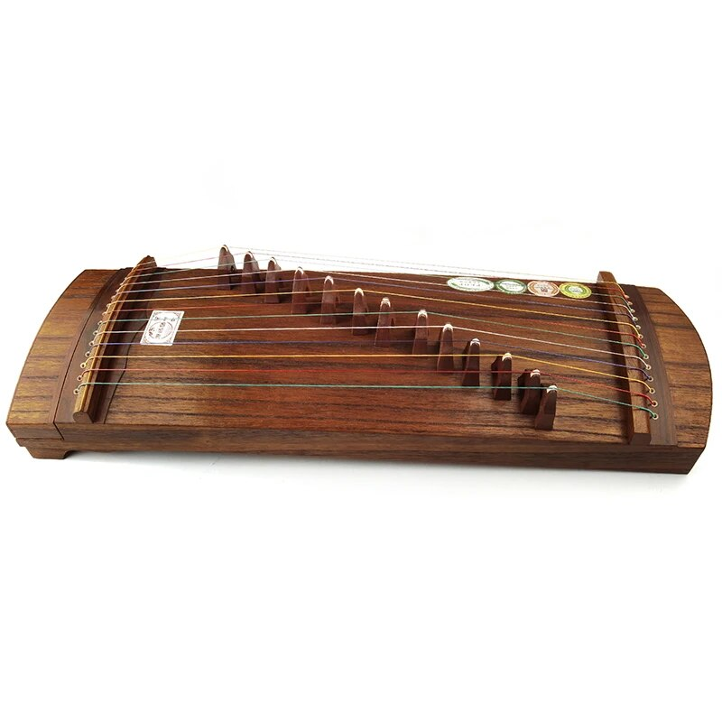

Кото
Кото — это изысканный японский струнный инструмент, который завораживает своей нежной и эмоциональной музыкой. С его изящной формой и глубокими корнями в традиционной японской культуре, кото стал не только символом нации, но и важной частью ее музыкального наследия.
Кото появился в Японии более тысячи лет назад и прошел долгий путь эволюции, сохраняя свою характерную форму и звучание. Изначально, этот струнный инструмент использовался в религиозных и императорских церемониях, а с течением времени стал популярным в традиционной и современной японской музыке.
Кото представляет собой деревянный инструмент с длинным телом и массивной верхней декой, на которой расположено 13 струн, натянутых над длинным деревянным жиклером. Музыкант играет на кото, используя тонкое деревянное приспособление, напоминающее кисточку, что придает инструменту неповторимую мягкость и выразительность звучания.
Звук кото может быть нежным и легким, а может олицетворять собой силу и глубину. Используется как сольный инструмент, так и в составе ансамблей, обогащая различные музыкальные композиции. Благодаря своей универсальности, кото становится всё более популярным за пределами Японии, завоевывая сердца музыкантов и слушателей по всему миру.